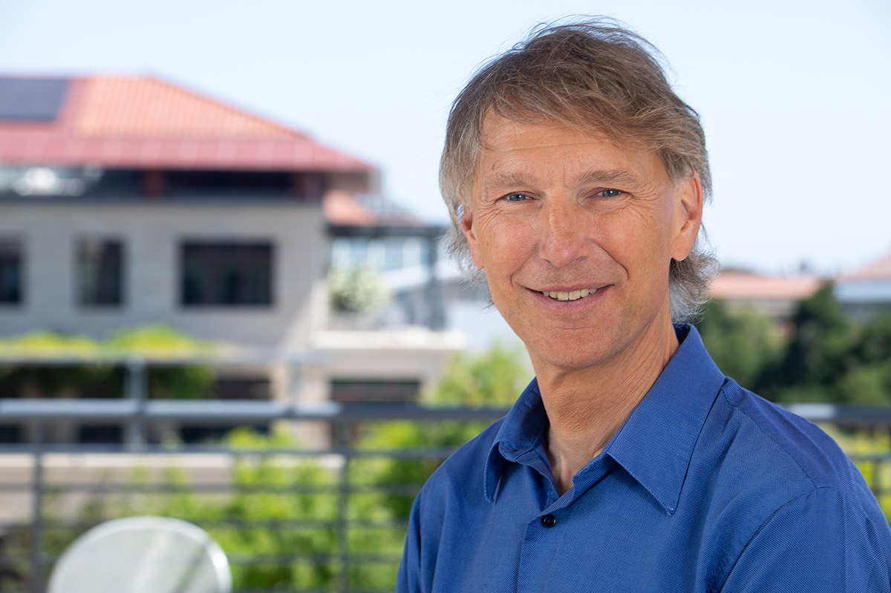

Alex Aiken
Alcatel-Lucent Professor, Stanford University
Computer Science Division Director, SLAC
|

past portraits
|
Contact
FAQ
Publications
Software
Bio
Teaching
Research
Misc
Current Students
Graduated Students
| email | aaiken@stanford.edu |
| office | E462 CoDa |
| phone | 650-725-3359 |
| assistant |
Opeta Henderson
opetah@stanford.edu
650-721-1166
|
Alex Aiken is the Alcatel-Lucent Professor of Computer Science at Stanford.
Alex received his Bachelors degree in Computer Science and Music
from Bowling Green State University
in 1983 and his Ph.D. from Cornell
University in 1988. Alex was a Research Staff Member at the IBM
Almaden Research Center (1988-1993) and a Professor in the EECS department at UC Berkeley (1993-2003) before joining the Stanford faculty in 2003. His research interest is in areas related to programming languages.
He is an ACM Fellow, a recipient of ACM SIGPLAN's Programming Languages Achievement Award and Phi Beta Kappa's Teaching Award, and a former chair of the Stanford Computer Science Department.
Alex is married to Jennifer
Widom. Jennifer and Alex have a son Tim
and a daughter Emily.
Here are some photos from the family's travels.
- FlexFlow is a system for automatically finding fast parallelization strategies for deep learning training and inference. FlexFlow is built on Legion (see below).
- Legion is a programming system for heterogenous, parallel machines with complex memory hierarchies.
I also maintain a page of past research projects and a
set of pages internal to current projects.
- Here's a recent trip report from a winter crossing of the wilderness areas west of Lake Tahoe.
- I gave the commencement speech at CS graduation during the time I was department chair (well, I did miss one year ...). I've received requests for links to those speeches, so here they are:
2015,
2017, and
2018.
- If my bio is too short for you, People of PLDI has published an interview with me, along with a number of other PL researchers.
- In 2018 I celebrated the (almost) end of my term as department chair by hiking the Sierra High Route. Here is the trip report.
- Advice for Program Chairs distills my experience (and things I've learned from many other people) as a program chair for POPL and PLDI.
- I delivered a memorial for John Backus at PLDI'07.
- My family took most of the '07-'08 academic year off to travel the world. Those with too much time on their hands can check out the trip's web page.
|
Current Ph.D. and Postdoctoral Students
|